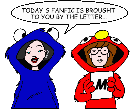
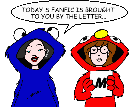

Fan Fiction
"M" by Title

Fan Fiction
"M" by Title

|
Authors: If you no longer wish for any of your stories to be posted, please send e-mail to fanfic@lawndale.net and I will remove them at once. |
| M.I.B. - Morgendorffer in Black By Ross Webster Category: Crossovers & Parodies A parody of the film "Men in Black." |
| Mack Daddy (*) By The Angst Guy Category: Past & Future Andrew Landon and Michael MacKenzie meet again, years after Mack and Jodie graduate high school, and Mr. Landon says something that Mack never expects. |
| Mad Dog (*) By The Angst Guy Category: Holidays A Halloween tale from an alternate Daria universe: "There shall be done a deed of dreadful note" (William Shakespeare, "Macbeth"). A PPMB Iron Chef short story. Note: This story includes content (language, violence, or sexual situations) that may not be appropriate for some readers. |
| Magical Beginnings By Rocketrider Category: Past & Future Ten years later, Stacy looks back on the day she found true love. A follow-up of sorts to the episode "Life in the Past Lane." |
| Makeup Your Mind By Jill Palmer Category: Miscellaneous Things get mucho weird in Lawndale with the arrival of a new makeup chain. Turns out the Fashion Club is behind it, and Daria and Jane have to stop it... with help from a few unexpected places. |
| Making the Breast of It (*) By The Angst Guy Category: Alternate History A ficlet about an alternate-universe superheroine with two big problems. |
| Malice of Absence By Renfield Category: Alternate History A day in the life of the Morgendorffer's daughter. |
| Mall Walking By Mitch Category: Miscellaneous Quinn discretely borrows Helen's car and credit card for a trip to the mall... and is tormented by a certain Californian cartoonist. |
| Malledrats By Nick Hernandez Category: Crossovers & Parodies A trip to the mall provides for an interesting day when Daria and Jane run into Beavis, Butt-Head, the Fashion Club, and a couple of *really* weird guys, in this parody of the film "Mallrats." |
| Manifest Destiny By CAP Category: Alternate History An AU tale in response to an Iron Chef challenge by Minx which asked: "What would Lawndale be like if a major event in history did not take place?" Daria, a girl from the German Empire, begins classes at Lawndale High eighty years after the United States chose not to enter World War I. |
| The Many Loves of Thalia Gillis By Milderbeast and Deref Category: Crossovers & Parodies In this crossover with "The Many Lives of Dobie Gillis," we meet Thalia Gillis, who's as smart and cynical as Daria and as "take-no-prisoners" as Jane. She also has a secret that could cause complications in her newly formed friendship with them. |
| Mart of the Dead By Smileyfax Category: Sci-Fi, Fantasy & Horror Andrea finds the night shift lasting longer than usual when a terrorist attack unleashes the walking dead upon the world, trapping her and a growing number of survivors in the Pay Day warehouse store. |
| Mata Dari By Dennis Category: Past & Future Daria is nearing 30 with a dull job and a familiar boss who she hates. But is all as it seems? |
| Matt By Matt Category: Miscellaneous Daria and Jane find something else to watch besides "Sick, Sad World" when they discover a new show about a cynical, sarcastic, and anti-social college guy. Can a mere television show provide the way to mend their friendship? At the very least, it should pass some time... (This story takes place a few days after "Dye! Dye! My Darling.") |
| May the Detachment Be With You By Anastasia Category: Miscellaneous Trent asks Daria to sing in a "musical comedy contest" with Mystik Spiral, but she finds herself in over her head when she discovers the content of her performance: a "Weird Al" Yankovic song from a galaxy far, far away... |
| Meanwhile In... By Wyvern337 Category: Holidays Snapshots of the wandering Lanes, one day in late November. |
| Meet the Fashion Club (*) By The Angst Guy Category: Alternate History There was one career path that the Fashionable Foursome could have taken, if they had wanted popularity, money, fame, and dates--and had talent. |
| Meeting Monique By Bacner Category: Miscellaneous Daria, Jane, Monique and Quinn help out Trent and Mystik Spiral, getting to know each other in the process. |
| A Meeting of the Mindless (*) By Guy Payne Category: Miscellaneous Is there anyone that popular boy can't charm? From a PPMB Iron Chef. |
| Melody Powers a.k.a. Daria Morgendorffer By Jerry Scanlan Category: Miscellaneous It's no coincidence that Daria wrote those Melody Powers stories... |
| Melody Powers in "Butcher, Baker, Cancer-stick Maker" By Mystik Slacker Category: Miscellaneous Daria's fictional secret agent, Melody Powers, goes to Russia to do what she does best. She also saves the world from Communism. |
| Melody's End By Bob Marley Category: Miscellaneous Melody Powers' final assignment. |
| Memories of the Night Before By Wormbait Category: Romance Will Daria and Jane finally come to the ultimate step in their friendship? Note: This story includes content (language, violence, or sexual situations) that may not be appropriate for some readers. |
| Memory Lame (*) By The Angst Guy Category: Miscellaneous Amy Barksdale tells a little story, and Daria and Quinn almost die. An entry in one of the PPMB's "Iron Chef" contests. |
| Mental in the Morning By Smileyfax Category: Miscellaneous The events of "Jake of Hearts" play out in a much darker way. |
| A Mid-Spring Day's Delerium By Bob Marley Category: Miscellaneous A flu-stricken Daria ingests a healthy dose of "capital N, little Y, big giant Q," triggering behavior that the word "bizzare" couldn't even begin to describe. |
| A Midsummer Nightmare's Daria [Artwork] (*) By The Angst Guy Category: Sci-Fi, Fantasy & Horror Quinn pulls a prank that causes Jake to think that Daria has taken up demon worship, and he takes Daria to a weekend father-daughter seminar to bring her "back to the light." Add in a few former classmates, romance, and an unexpected twist--courtesy of Stephen King--and a very strange summer weekend gets underway in Lawndale. |
| The Mighty Quinn By Nemo Blank Category: Holidays The sequel to "Daria's Season of Goodwill" finds Quinn, Daria, Jane and Stacy ushering in the new year by combining their talents to make good in an e-business, which turns out to be a lot more challenging than they imagined. All of this serves as a backdrop for the changes in Daria's life, as she fears she's slowly losing her identity in the wake of becoming Trent's girlfriend. |
| Mirror, Mirror By Paperpusher Category: Crossovers & Parodies After a day of dealing with Upchuck's come-ons, an all-night marathon of classic "Star Trek," and a lot of really bad pizza, Daria awakens to find herself in an alternate universe, one where everyone she knows is brutal, sadistic, and cruel. How did she get there, and how will she get home? An uproarious parody of the classic "Star Trek" episode "Mirror, Mirror." |
| Misery Chick: Wrestling with Fashion By Chris Smith Category: Crossovers & Parodies When Sandi disgraces her old hometown, chaos follows. This story (which takes place five years after the episode "Esteemsters") is strongly based on the documentary about wrestler Bret Hart. |
| The Misery Chicks (*) By NightGoblyn Category: Alternate History A very different Daria and Quinn arrive at Lawndale High, both girls carrying scars from a horrific encounter buried in their past. They draw other injured souls into their circle, but can the Misery Chicks help one another overcome their demons? |
| Misery's End By Richard Lobinske Category: Alternate History What if the events of "The Teachings of Don Jake" had ended differently? Amy Barksdale arrives in Lawndale to care for a niece she hasn't seen in years and they learn to cope with the changes in both their lives. |
| Misfit Love By Danny Bronstein Category: Miscellaneous Daria becomes friends with the new kid in school, Jared Dorkowitz. |
| Misfit Love ML20: Twenty Years Later By Danny Bronstein Category: Past & Future Daria's old nemesis, Jared Dorkowitz, is back and may be out to get her. |
| Missing By Lauren Forse Category: Miscellaneous Daria runs away after her ex-friend from Highland comes back to haunt her. |
| The Mission By Daniel O. Gilbert Category: Crossovers & Parodies Daria helps the love of her life, Trent, save his mother from rebels in Central America, with the help of John Thomas Rourke of "The Survivalist Series." |
| Mole? Somebody Get Me a Dermatologist! By Belle Book Category: Crossovers & Parodies No, it's not that kind of a mole. Daria is tricked into becoming one of ten contestants on a spin-off of "The Mole," called "Teen Mole." Daria is not the Mole; instead, she has to figure out which of her fellow contestants is the Mole--and prevent the other eight genuine contestants from finding out so that Daria can win the jackpot at the end of the game. Will Daria succeed? Is Jane her best friend? Does she even care? Stay tuned! (A ten-part story.) |
| Mona Lisa Smile By coonassblondie Category: Miscellaneous Trent has an unexpected house guest. A story of how he reacts and what happens. A fair amount of angst, with a touch of romance. |
| Monique's Subtraction By Richard Lobinske Category: Miscellaneous Trent missing the deadline for Daria's multimedia project has far-reaching consequences after she and Monique have a little chat. Set during the events of the episode "Jane's Addition." |
| A Monster in the Unmaking By Kristen Bealer Category: Miscellaneous Steve Taylor, Brittany's father, is forced to take a good look at his life. He doesn't like what he sees. Story inspired by Mike Xeno's "Irredeemable Daria Characters" PPMB thread. |
| Monsters By Wyvern337 Category: Sci-Fi, Fantasy & Horror Aunt Amy tries a little... *experiment*... |
| Moon Over Daytona By Milderbeast Category: Past & Future After graduating from their respective colleges, Daria and Jane's lives take an unusual turn due to Daria's new job. |
| More Guilty Pleasures By Angelinhel Category: Miscellaneous Another PPMB "Iron Chef" challenge ficlet in which one or more Lawndale characters are shown secretly indulging in a "guilty pleasure" (and being very out of character doing it). Three for the price of one in this sequel! |
| More Real Than Real By Shinai Category: Crossovers & Parodies Not long after the Morgendorffers arrive in Lawndale, a new student comes to town who's more than she seems to be. Loosely based on the Amber diceless role playing game. |
| More Than Just Lost (*) By The Angst Guy Category: Past & Future Jane Lane and Alison meet again, a few years after the events of the movie "Is It Fall Yet?" in this play for three voices. The meeting, however, does not go as expected. |
| The More Things Change... [Artwork] By Jon Kilner Category: Miscellaneous Daria is hurt when her latest accomplishment goes unnoticed by her parents. But she is not so alone as she thinks. You may be surprised to find out who rallies to her support. |
| Morgan V Morgendorffer By psychotol Category: Crossovers & Parodies Two serial killers go to war, in this crossover with the Showtime series "Dexter." |
| The Morgans By Smileyfax Category: Crossovers & Parodies The Morgans, a rural family, strike oil and move to Lawndale. Hilarity ensues. From the "White Trash Daria" Iron Chef. |
| The Morgendorffer Code (*) By The Angst Guy Category: Crossovers & Parodies Imagine this: a crossover involving Dan Brown's "The Da Vinci Code". Now imagine you're about to read it. |
| Morgendorffer PI By Gregor Samsa Category: Miscellaneous Jake investigates the possibility of another career. |
| Mormon Cornfield By Hikhali Category: Miscellaneous The Lawndale gang take a trip to a farm. Based on a dream by the author (who hopes this story doesn't offend Mormons). |
| Morning By Voice Of My Category: Miscellaneous Daria begins her day. |
| The Morning After By Brandon League Category: Miscellaneous The morning after a wild graduation celebration with the Fashion Club, Stacy Rowe discovers that she's a bigger party animal than she ever could have dreamed. |
| Morning Next By Roland "Jim" Lowery Category: Past & Future Waking up in a bathroom without any memory of how she got there ended up being the least weird thing to happen to Daria that morning. |
| Morte La Montreal By wierdgrrl Category: Series & Multi-Part Stories (Miscellaneous) A school field trip to Montreal, Canada, involves more than just the students, and produces more than the usual amount of hijinks. |
| Mother and Daughter By Shane Greentree Category: Miscellaneous Helen and Daria meet for lunch, conversation--and heated political debate. |
| A Mother in Spite of Herself By Admonisher Category: Miscellaneous A poignant tale of mother/daughter relationships, as Daria attempts to get published and Helen is torn between her family and her job. |
| A Mother's Love [Artwork] By Richard Lobinske Category: Series & Multi-Part Stories (Sci-Fi, Fantasy & Horror) A mother's love can make all the difference in more than just one world. Daria finds this out first-hand when a simple retreat from the pressures of her everyday life finds her caring for three rather unusual children, leading to an adventure that affects her more deeply than she ever would have thought possible. |
| Mother's Milk By Kara Wild Category: Miscellaneous In this ficlet set in the post-Driven Wild Universe, a year after "Memory Road," Daria and Quinn get the urge to try their Aunt Amy's breast milk... with unexpected results. |
| Movies and Moonflower By Brother Grimace Category: Miscellaneous Helen reminisces over her first love, their first kiss, and how Stanley Kubrick set the scene for it all. |
| Moving the Goalposts By Kristen Bealer Category: School Situations Sandi Griffin has a serious problem with her best friend. Set during the episode "The Misery Chick." |
| The Mr. T Trilogy By Smileyfax Category: Crossovers & Parodies In part one, "Daria Meets Mr. T," Daria meets Mr. T and together they go on a magical journey of hitting people so hard they explode. In part two, "Alison vs. Mr. T," Mr. T and Daria work together to save Jane from being seduced by the artistic temptress. And in the thrilling conclusion, "Mr. T and the Fanon Cannon," Mr. T proceeds to beat up everybody in the Daria expanded universe. |
| Ms. Morgendorffer's Profession By Gregor Samsa Category: Miscellaneous On the final night of the century, Daria Morgendorffer makes a fateful decision. |
| The MSTing of Sailor Brittany By Skyrocket Category: Crossovers & Parodies Mitch's "Sailor Brittany" gets the MST3K treatment. |
| MTV Mutants #1: Safest Emergency By Caira Category: Crossovers & Parodies Lawndale is under threat... and it's not just the graffiti on the "Welcome to Lawndale" sign this time. Brittany's on fire, Kevin's *never* gonna call Mack the wrong thing again, and DeMartino's eye isn't bulging. Obviously, something must be done... and of course Ms. Li screws it up. If there's anything left of Lawndale High afterwards, she might just figure that out. |
| Much Ado About Laughing By BlackWolfhound Category: Crossovers & Parodies O'Neill stages another play, but this time he takes existing relationships and friendships to a new level as Daria, Jane, Tom, Jesse, Trent, Upchuck and many others act out Shakespeare's classic comedy--with their own spin! |
| The Mud Racer Challenge By Greystar Category: Crossovers & Parodies Daria, Jane, and Trent have made it to the first round of the TLC show "Junkyard Wars." What will their challenge be, and will they prevail? |
| The Muppet Show: Cynicism & Violence By Erin Mills Category: Crossovers & Parodies It's the Muppet Show, with our very special guests, the stars of MTV's "Daria"! |
| Musician Wanted By Helen A. Category: Miscellaneous Quinn decides that she needs to date a musician to be more popular. Guess who she picks? |
| The Musician's New Muse By Austin Covello Category: Romance Do opposites attract? Maybe, but Quinn and Trent have more in common than they realize. Also, new players enter the Morgendorffer/Griffin war, and Tiffany learns a new word. A four-part story, with each chapter including a link to the next. |
| My Angsty Ending to the "Falling Into College" Series By Brother Grimace Category: Miscellaneous Not with a bang, but a wimper... |
| My Big Fat Lawndale Wedding By Teeki Category: Past & Future Daria and Tom are taking the plunge into wedded bliss, but are quickly learning that weddings are for families instead of the bride and groom. Can Daria find a way to put the sanity back into the "happiest" day of her life? |
| My Daria/Harry Potter Crossover By Brother Grimace Category: Crossovers & Parodies Several Death Eaters find out that one shouldn't try to Trace down folks in Lawndale. |
| My Date With Daria By Austin Covello Category: Miscellaneous The author goes on a blind date with Daria. |
| My Dinner With Quinn (Redux) By Brother Grimace Category: Miscellaneous You'll never look at a seamstress' tape measure the same way again after reading the events of a Daria fan's date with the Younger Princess Morgendorffer! |
| My Dinner With Upchuck By Rey Fox Category: Miscellaneous In order to pay off a debt, Daria goes on a Chez Pierre date with resident sleaze Charles "Upchuck" Ruttheimer III. Will she survive? Will she use the right fork? |
| My Fair Zombie By Smileyfax Category: Crossovers & Parodies In this brief send-up of "My Fair Lady," Jane proposes to make a proper lady out of Daria, who has become a zombie. |
| My Favorite Enemy By Mystik Slacker Category: Sci-Fi, Fantasy & Horror Three years after the events in "True Cynicism," Daria has to save the world from nuclear war again, and encounters some old friends along the way. |
| My Fellow Americans (*) By Guy Payne Category: Miscellaneous We now interrupt your regularly scheduled fanfic for this message from the President of the United States. From a PPMB Iron Chef. |
| My Life By Sam Lincoln Category: Miscellaneous So, just what do we know about Mack, anyway? Also, a little misunderstanding has serious repercussions for Quinn. |
| My Night at Tom's By Thessalian Category: Miscellaneous The candles-and-flowers scene from the episode "My Night at Daria's," told from Tom's point of view. |
| My Parade Adventure By Richard Lobinske Category: Miscellaneous Tad Gupty's school essay on the events of "I Loathe a Parade." |
| My Quinn's Delayed Reaction [Artwork] By John Berry Category: Miscellaneous "Quinn flaunts herself, you can't escape her, then uses guys like toilet paper." But what if she found the right person...? |
| My Sweet Lord (*) By Guy Payne Category: Miscellaneous The Fashion Club finds religion in their own unique style. From a PPMB Iron Chef. |
| My, What Big Eyes You Have! By Tony Seljuk Category: Miscellaneous An interesting take on Mr. DeMartino, looking at a typical day in his life. Note: This story includes content (language, violence, or sexual situations) that may not be appropriate for some readers. |
| Mystery Usenet Theater 3000: "A Kiss for Quinn" (*) By Bryan McGucken Category: Crossovers & Parodies The author's own fanfic gets the MST3K treatment. |
| Mystery Usenet Theater 3000: "The Misery Senshi Neo-Zero Double Blitzkrieg Debacle" (*) By Matt Blackwell, et al. Category: Crossovers & Parodies A "Mystery Science Theater 3000" treatment of Peter Guerin's fanfic. |
| Mystery Usenet Theater 3000: "The Return of the Lawndale Militia" (*) By Matt Blackwell, et al. Category: Crossovers & Parodies A "Mystery Science Theater 3000" treatment of Peter Guerin's fanfic. |
| Mystery Usenet Theater 3000: "Triumph of the 'Retart'" (*) By Matt Blackwell, et al. Category: Crossovers & Parodies A "Mystery Science Theater 3000" treatment of Peter Guerin's fanfic. Note: This story includes content (language, violence, or sexual situations) that may not be appropriate for some readers. |
| Mystik SPIRAL (The White Fic) By jak981125 Category: Crossovers & Parodies This time, the author's gone too far as the Spiral takes on the Beatles' "white album." Sorry, Eric Clapton refused a cameo. |
| Mystik Spiral's Lonely Lawndale Band By jak981125 Category: Crossovers & Parodies Enjoy the concert of the season as Mystik Spiral takes on Sgt. Pepper in a 9/11 benefit. A splendid time is guaranteed for all! |
| Mystique Spiral [Artwork] By M. Bruner Category: Romance A new girl in Trent's life throws Daria completely for a loop, causing her to take drastic steps to ease her pain. |